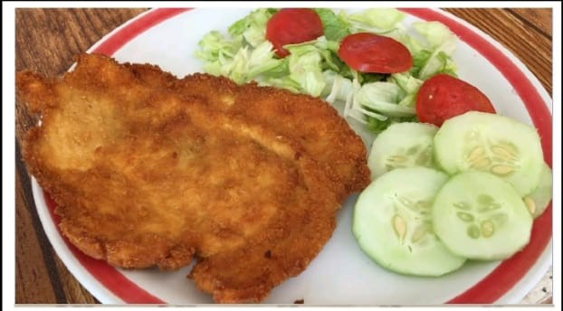
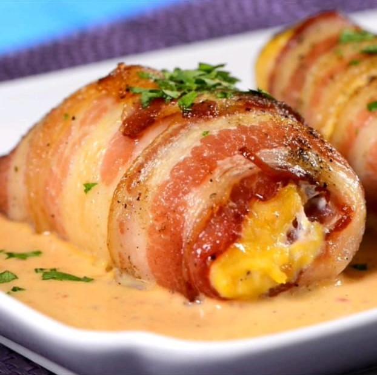
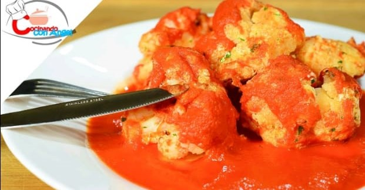

| ºN | Nombre | Imagen | Descripción |
|---|---|---|---|
| 1 | Las Pechugas Empanizadas |  | Son una de mis comidas favoritas ya que ah cada rato me gustaba comer eso, a parte puede ir acompañada de una sopa blanca y una ensalada y es muy rica. Cada que mi mamá hace de comer toda mi familia convive. |
| 2 | Pechugas Rellenas |  | Son un platillo muy rico,eso va con una salsa de chipotle y la acompaña un arroz blanco que también es muy rico. A mí familia al igual que a mí le gustan mucho ya que cuando mi mamá las hace todos terminamos chupandonos los dedos. |
| 3 | Coliflor Capiada Rellena De Queso y Caldito de Jitomate |  | son también muy ricas y saludable, pero casi a toda mi familia le gusta, pero a mí hermana no le gusta y ella prefiere comer otra cosa. |